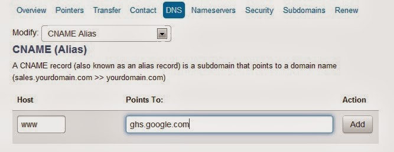
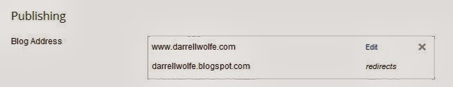
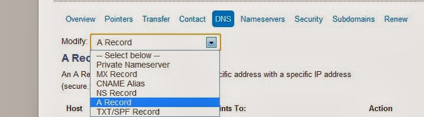
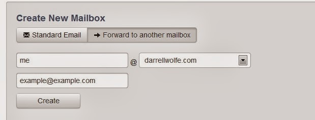

How to use Blogger.Com and Domain.Com to host your website for less than $10/Year.
Help
Website
Online
A step by step guide to setting up a hosted top level domain name on Blogger.
Wanting my own domain:
Have you ever wanted your website, non profit website, business website, or blog to have a more professional web address or domain name? But you just don’t want to pay the big bucks for a “real websiteâ€. At least not yet.
Maybe when you become more successful, but you are still trying to keep the rent/mortgage paid. Therefore you must keep costs down. So you came to Blogger because you tried Wordpress.com and you got tired of them stopping you from entering your own html and affiliate links. In the end, whether you chose Wordpress or Blogger or both, you settled for a subdomain.
Maybe when you become more successful, but you are still trying to keep the rent/mortgage paid. Therefore you must keep costs down. So you came to Blogger because you tried Wordpress.com and you got tired of them stopping you from entering your own html and affiliate links. In the end, whether you chose Wordpress or Blogger or both, you settled for a subdomain.
So instead of getting that cool “MyAwesomenessOfASite.Com†site you wanted, you settled for “MyAwesomenessOfASite.wordpress.com†or “MyAwesomenessOfASite.blogspot.comâ€.
But what if I told you that getting a real domain name doesn’t have to mean hosting a website yourself!? That’s right! Blogger will host your domain name for free, and wordpress.com, will do it for just a few dollars a year.
In fact, although this post is about using Domain.Com and Blogger.Com, you could use these instructions to understand Domain.Com better and use Wordpress.Com’s instructions for their part of it, which is really the smaller part anyway. That is, if you are still using Wordpress.com… for some reason.
The only thing you will pay for, if you use Blogger, is the domain name itself. Which for most people will be about $9.99 per year. It can be less and more depending on what name you choose. More on that in a moment.
Just in case, you don’t want ALL the details and blow by blow screen shots, here are the steps right up front.
But what if I told you that getting a real domain name doesn’t have to mean hosting a website yourself!? That’s right! Blogger will host your domain name for free, and wordpress.com, will do it for just a few dollars a year.
In fact, although this post is about using Domain.Com and Blogger.Com, you could use these instructions to understand Domain.Com better and use Wordpress.Com’s instructions for their part of it, which is really the smaller part anyway. That is, if you are still using Wordpress.com… for some reason.
The only thing you will pay for, if you use Blogger, is the domain name itself. Which for most people will be about $9.99 per year. It can be less and more depending on what name you choose. More on that in a moment.
Just in case, you don’t want ALL the details and blow by blow screen shots, here are the steps right up front.
The Steps:
- Buy a domain from Domain.Com (or you favorite place)
- In Blogger, Settings, Basic, Publishing, +Add a domain name
- Type in the name you bought.
- Make sure to include the “wwwâ€
- Expect an error message. You WANT the error message.
- In Domain.Com set up your CNAME using the instructions Blogger gives.
- Enter the www and ghs.google.com as well as the 12 digit and 21digit numbers as mentioned above.
- WAIT for it….WAIT for it….
- After an hour or two, once the system has had time to reset things for you…
- Go Back to Blogger and type in the new domain name.
- Make sure to include the www.
- Hit SAVE
- This time there should be no error!
- You are basically done.
- You should also, go back and set up A Name listings as well. See my whole post for more on that.
See my WHOLE post for more tips and extra advice. Now to a blow by blow explanation!
Buy your domain name and website from two different places:
So the only cost to you is to go buy a domain name from one of the many “registrars†out there. Eventually you will probably want to get a fully hosted site, maybe. If you do here is a thought about why you do NOT want to buy your domain name from the place that you may eventually host.
I don’t know all the details exactly… but here is what my friend Mark said to me, who has run websites for his own businesses for decades. He assures me that you do not want to buy the domain name from the same place you host your site. Something about the site you host on getting mad at you and shutting your site down and locking you out and making life difficult for you and you loosing the domain name in the process.
If you buy your domain name from one service and host with a different service and the host service causes you problems, you just go to your domain registrar and point the domain name at the new service you set up with someone else.
If you were, (*just for example not saying either of these places are good or bad), but let’s say you went to Go Daddy and had problems but bought your domain name from Domain.Com. Well, just go to Blue Host, set up the new site and point the domain name to Blue Host instead.
You are up and running in hours while you work out the issues with Go Daddy. Again, just examples not saying either of those is better than another. I have no idea which fully hosted site is best, obviously I still use Blogger.
If you were, (*just for example not saying either of these places are good or bad), but let’s say you went to Go Daddy and had problems but bought your domain name from Domain.Com. Well, just go to Blue Host, set up the new site and point the domain name to Blue Host instead.
You are up and running in hours while you work out the issues with Go Daddy. Again, just examples not saying either of those is better than another. I have no idea which fully hosted site is best, obviously I still use Blogger.
What Domain name should I buy?
When choosing a domain name make sure it fits what you want. I wanted DarrellWolfe.Com because I want to operate under my own brand. But for my food reviews site I chose lifeinfortworth.com because it fit the niche market I’m looking to serve there. Because of that, as I build it, the site should start to rank higher in search hits for things around fort worth just because of the domain name I chose. The domain name actually plays a part in your search hits.
Please check these articles out before paying for anything, check them out in this order:
I use Domain.Com
I use Domain.Com because I have had great experiences with them. Their website is clean and easy to use. They make things very simple. Really nice interface. Nothing much more complicated than that. Plus the very fact they own the rights to “Domain.Com†seems pretty sound to me. To read more “About†them click here. There is really nothing more to it than that. I like them. I’ve used them for several other websites for years. I will continue to use them because they make it so easy to do business. They have a host of services I haven’t used yet, but probably will when I get more money coming in to do so.
Now, as of today I am an affiliate. Which means I’ll get paid if you sign up for a domain name through them by clicking the this link: Host your website with Domain.com!
But I would have written this anyway, even if I wasn’t. I wrote most of this post before it occurred to me to see if they have an Affiliate Program, and they do! And it’s free to join. So by the time this post goes live, I’ll be a Domain.Com Affiliate. For more information about what it means to be an affiliate click here.Setting Up Your New Domain Name:
You Will Need:
I thought it would be helpful to set you up for success. Here’s what you will need to get started.- Internet
- Web Browser (I use Opera)
- Note Pad
- (Either real paper or electronic, doesn’t matter but electronic would be easier to copy and paste).
- Three Tabs Open
- Chosen Domain Name(s)
- You will have wanted to take time to consider what domain names you want to try to buy, come up with some alternatives. Choosing your domain name, depending on what you want and what’s available may be the longest part of this task.
- It took all of ten seconds to find that DarrellWolfe.Com was available.
- But my LifeInFortWorth.Com was originally going to be TexasLiving.Com and it was taken. In the end I liked LifeInFortWorth.Com WAY better! Just hadn’t thought of it.
- It probably took me an hour to figure out that domain name and choose it. I was happy with the end result, and very happy that I took my time and prayed about it before locking in my choice.
Using Domain.Com and choosing a domain name:
First go to my favorite place to buy Domains: Domain.Com. Just search for the domain you want and when you find one available buy it, on Domain.com!
Now keep this window open because you are going to do some work on Domain.Com after you have done some work with Blogger.
Now keep this window open because you are going to do some work on Domain.Com after you have done some work with Blogger.
{kind=link}
+Add a domain name in Blogger:
Then the first option “Basic†will have several options to the page on your right. One section, seen below, is “Publishingâ€. Simply click “+Add a custom domain…â€
{kind=link}
You will then see the screen that has “Advanced Settingsâ€. Make sure to open the “Settings Instructions†because it gives you more details you need to do the following procedures.
Settings Instruction take you: HERE
{kind=link}
Now that you have your error message you can do the next steps. You should see two sets of data. One will say “www†and “ghs.google.comâ€. The next set of data will look like a complete mess of numbers and letters. The first set may be about 12 digits, the next will be about 21 digits followed by “…googlehosted.com†These are the four sets of data you need for Domain.Com.
Now the www and ghs.google.com is going to be the same for everyone. The 12 digits and 21 digits are specific to your blog. If you have used Blogger to set up 20+ blogs, for example, each of them would have different digits that pop here, specific to this particular blog.
{kind=link}
On Domain.Com Under DNS choose CNAME Alias
Go to your DNS section under your new domain name on Domain.Com…(*Note: NOT your nameservers, leave those alone.). There will be a drop down box next to “Modify:†Select the option that says: “CNAME Aliasâ€.
{kind=link}
Now on the CNAME Alias you will need those four pieces from Blogger.
|
 |
|
|
{kind=link}
You will type in the www under host and ghs.google.com under points to. Then do the same for your specific info. Click “Add†and enter your 12 digit under the host section and 21digit.googlehosted.com under Point To.
{kind=link}
Now we wait…
…no really… we wait… You can leave these screens up if you want, but walk away, for at least an hour or two. Go watch Captain America. Or better yet go read Platform: Get Noticed in a Noisy World
Once domain.com has had anywhere from 10 minutes to two hours to update, you should be able to proceed by going back to Blogger.
Note: Don’t use the “Nameservers†section. Use the DNS section and choose CNAME Alias from the drop down.
Going back to Blogger you will now hit save.
Just go back to settings, basic, publishing, +add a custom domain name, type in your newly set up domain “www.mynewdomain.com†and make sure you use the “www†in front. Now hit Save. it should work this time with no error message.
{kind=link}
If you did everyting right so far, you should now see under Publishing a note that mydomin.blogspot.com redirects to www.mynewdomain.com
|
 |
|
If you go ahead and go back in and edit there will be a little button you can click that will tell “mynewdomain.com†(without the wwww) to forward to “www.mynewdomain.comâ€. But only after it recognizes the top level version with the www. You will see a small check box followed be “Redirect example.com to www.example.comâ€. Then hit save.
|
{kind=link}
{kind=link}
Extra Credit; things you should also do or consider.
Set up your A Records:
|
 |
|
|
{kind=link}
There will already be many A records there. But you will want to set up four additional ones.
Pasted from Google Bloggers Instruction Page:
-
Optional: You can also enter A-records, which links your naked domain (example.com) to an actual site (www.example.com). If you skip this step, visitors who leave off the “www†will see an error page.
-
Optional continued: After completing Step 8, enter your domain name in the format example.com, and list the I.P. addresses shown below in the “A†section. You’ll need to create four separate A-records which point to four different Google IPs.
216.239.32.21End of optional section
216.239.34.21
216.239.36.21
216.239.38.21
Choose a personalized Email:
One last thing you could do, not required but it’s worth doing, especially since you paid for the domain name. Use your personalized email. example@example.com. Me@DarrellWolfe.Com and Darrell@DarrellWolfe.Com are mine. Feel free to email me if you found this article helpful. Also comment below.
Now under the Overview Tab find the link that says Mail and click on that.
{kind=link}
Click on Forward to another mailbox. Select the email you want @yourdomain.com and then what email address you have set up with one of the free providers that you want it forwarded to when someone emails you. You probably are using GMAIL because you have to have a google ID to access blogger because Blogger is a google product. Therefore, you could use that email. But you could also use your free yahoo, hotmail, live, outlook, aol, or any other such thing and no one would ever know you’ve been using those services because they emailed you at “Example@yourdomain.comâ€.
Just to clarify. By doing this. It simply forwards your email. So they send an email to me@darrellwolfe.com and the email is forwarded to example@gmail.com. I still use gmail to access my emails, but I get to use a nifty email address!
Pretty neat huh?!
|
 |
|
|
{kind=link}
Lock Your Domain
{kind=link}
What the?! Why did I get an error asking if this is my domain?
Best laid plans often have set backs. I set everything up. It worked. My site said the new domain. Then an hour later I went back and it looked like this:
{kind=link}
Why did THAT happen? Well it takes time for the servers all over the Internet to figure out what to do with your new domain. Go to bed and figure it out tomorrow. Sure enough. I went to bed and the next morning all was well. In fact, my darrellwolfe.com without the “www†worked too, because I set up my A Records last night before going to bed!
Conclusion I now have a Top Level Domain:
Hurrah! I’m set up with a new name for an old blog. I never moved the blog, changed it, imported anything. I just gave the web address a facelift, and I only paid $9.99 for my domain name!
Review the Steps:
- Buy a domain from Domain.Com (or you favorite place)
- In Blogger, Settings, Basic, Publishing, +Add a domain name
- Type in the name you bought.
- Make sure to include the “wwwâ€
- Expect an error message. You WANT the error message.
- In Domain.Com set up your CNAME using the instructions Blogger gives.
- Enter the www and ghs.google.com as well as the 12 digit and 21digit numbers as mentioned above.
- WAIT for it….WAIT for it….
- After an hour or two, once the system has had time to reset things for you…
- Go Back to Blogger and type in the new domain name.
- Make sure to include the www.
- Hit SAVE
- This time there should be no error!
- You are basically done.
- You should also, go back and set up A Name listings as well. See my whole post for more on that.
If you found this to be helpful, feel free to try it yourself. Blogger is FREE and they charge nothing to host your domain name. So it’s only going to cost you the going rate for a domain name at domain.com. Which can be anywhere from just a few dollars if you use a lesser used one like .info or .biz or something like that.
It may cost about $9-$15 for a more common one like .com or .org. You may even pay hundreds or thousands for popular domain names. So start with something that works well for you and doesn’t cost you a bunch. After all. If you are using this method, it’s because you didn’t want to fork out hundreds a year for a self hosted site yet anyway… not that you won’t, but you aren’t ready.
Host your website with Domain.com!
It may cost about $9-$15 for a more common one like .com or .org. You may even pay hundreds or thousands for popular domain names. So start with something that works well for you and doesn’t cost you a bunch. After all. If you are using this method, it’s because you didn’t want to fork out hundreds a year for a self hosted site yet anyway… not that you won’t, but you aren’t ready.
Host your website with Domain.com!